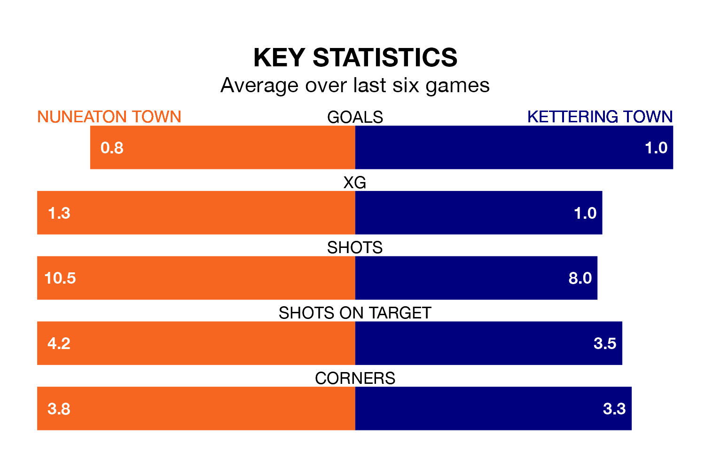

Nuneaton Town face Kettering Town at the A1 Gasforce Stadium on Saturday looking to secure a first win in seven Southern League Premier – Central games.
The Boro have lost three and drawn three matches since they last earned three points – against Kettering Town on November 28.
They face a Kettering side who have won three and drawn one over that time.
Nuneaton are 20th in the table after 24 games, of which they have won 10 and drawn four, earning 34 points.
Kettering are five places ahead of Nuneaton Town in 15th, with 13 wins and eight draws putting them on 47 points.
With 46 goals in 39 games so far this season, Kettering Town are scoring at below the league average rate with 1.2 goals per game. And they are conceding more than average, letting in 72 goals at a rate of 1.8 per game.
The Boro are also below average scorers, with 1.4 goals per game, compared to a league average of 1.5. They have conceded 1.6 goals per game.
Nuneaton's last match was on January 13, a 3-0 loss against St Ives Town.
Kettering beat Coalville Town 1-0 last time out, on April 20.
Updated: 07:59 (UTC), 26/04/24